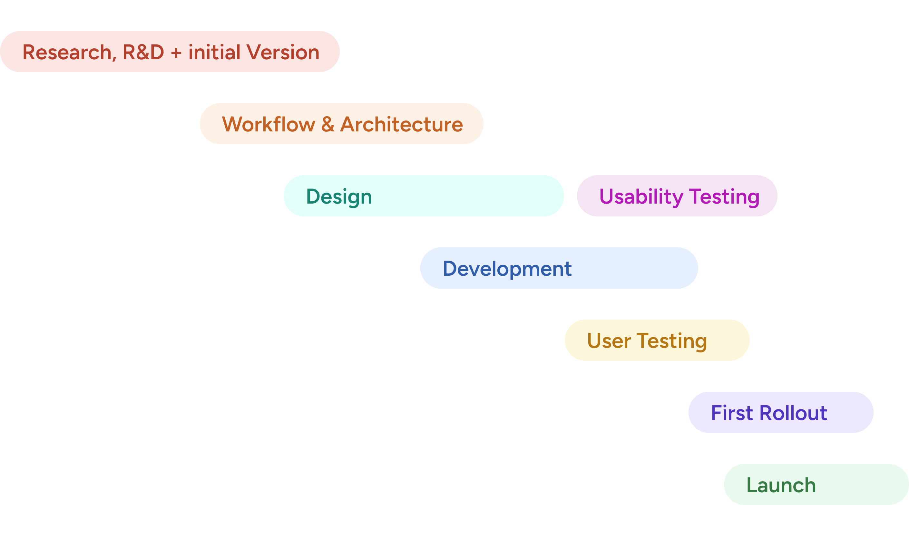
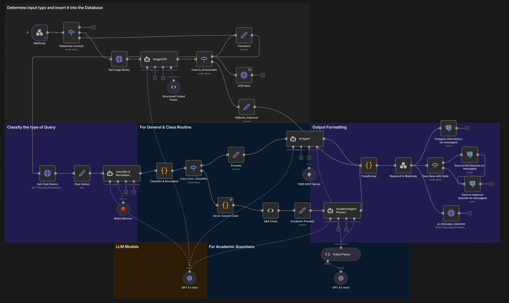

Solve problems on demand
Study partner, not teacher. TenTen doesn’t lecture. It helps students work through confusion the way a smart classmate would — step by step, in Bangla when they need it.
Building an AI study partner (TenTen) inside the 10 Minute School app — from early R&D in Google Colab to production RAG, Bangla LLM behaviour, intent routing, and product analytics after limited release in Nov '25.
The problem
10 Minute School reaches millions of learners across Bangladesh — many without access to private tutoring. Students on the platform could learn, but they could not always recover when they got confused.
Four issues kept showing up:
That meant the product supported content consumption, but not the moment after confusion. And in education, that moment matters a lot — it is where many students pause, skip, guess, or quietly give up.
Before TenTen, support meant FAQ pages and external chatbots with zero curriculum context. Learning broke at the exact moments students needed help most — and nothing inside 10MS could stitch it back together.
The solution
Not a regular chatbot
TenTen lives where learning actually breaks — general chat, recorded lessons, exam review, and live class. It is built into 10 Minute School, not pasted on as a separate chat window, so help arrives with class, grade, and curriculum context already in place.
Study partner, not teacher. TenTen doesn’t lecture. It helps students work through confusion the way a smart classmate would — step by step, in Bangla when they need it.
Academic doubts pull from textbooks and trusted 10MS content. Platform questions route elsewhere. Students get the right kind of help instead of one generic reply for every intent.
As students use TenTen across surfaces, it stays aware of their progress — what they watched, what they got wrong, what to revise next — so guidance deepens instead of resetting every session.
With TenTen, the product finally supports the moment after confusion — not just content consumption. A study partner embedded in the journey, not another chatbot students have to leave the app to find.
Four systems shipped across a ten-month build — retrieval, routing, orchestration, and analytics.
From pilot to product
I owned the data and AI layer — retrieval, routing, and orchestration that turned early Colab, n8n, and Dify experiments into production systems the product could trust.
Eight phases from research through limited release. The cards below are the four pillars that shipped across that arc.


~10 months of retrieval and prompt experiments in Colab, n8n, and Dify before production wiring.
Evidence from textbooks and trusted 10MS content, with eval loops on retrieval quality.
Separate paths for academic doubts vs platform and logistics questions.
Data-led iteration after limited release in Nov ’25.
Why those systems were necessary — the constraints and failure modes, not the implementation checklist.
Students rarely write textbook Bangla. Code-mixed shorthand, typos, and spoken phrasing break assumptions baked into base models and clean training data.
A fluent-sounding wrong answer erodes trust faster than an honest “I’m not sure.”
A six-word doubt has to land in the right NCTB paragraph inside a long chapter. Vector similarity alone often returns plausible-but-wrong passages.
Retrieval mistakes look like knowledge mistakes to a student who can’t verify the source.
The same input handles physics steps, class timing, pricing, and platform help. Routing errors send academic answers to logistics questions — or vice versa.
Wrong intent is worse than no answer when students are already stuck.
Four learning surfaces — one integrated study partner across the moments that matter, not four separate chatbots.
Strong adoption and daily usage.
Adoption rate
After multiple rollout phases, more than half of paid users have used TenTen.
Messages answered
Doubts and follow-ups handled across general chat, live class, recorded lessons, and exam review.
Daily active learners
On average, 500+ students actively solve doubts with TenTen each day.
After launch, 19.2% of students credited TenTen as a key reason for purchasing, and 50% said it will influence their next purchase too.
Student usage
Math leads — but practice, theory, and exam prep are close behind
Reach
4,200+ locations across all eight divisions
0 Students from rural areas
Math solving leads usage — but conversations go far beyond a single subject or surface.
Real responses from the TenTen student survey — in students' own words.
Tenten chatgpt er moto na — tenten correct answer dai.
আমাকে শিক্ষকের মতো করে যেকোনো প্রশ্নের উত্তর দেয়। আর উত্তরটা বইয়ের সাথে মিলে যায়।
ami bivinno AI use korechi doubt solve er jonno — tobe best answer tenten er kach thekei peyechi.
টেনটেন আমার কাছে খুবই উপকারী বন্ধু মনে হয় এবং আমার ডাউট একদমই সলভ হয়ে যায়।